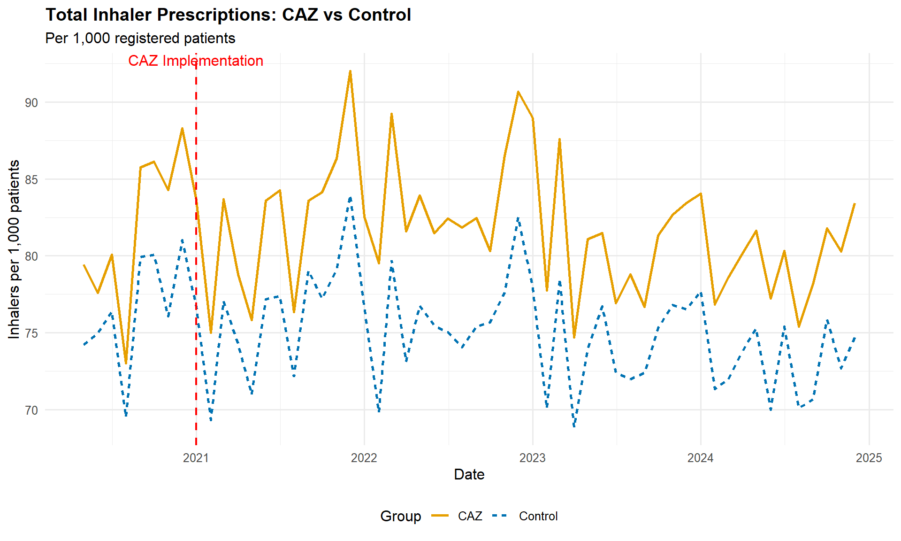
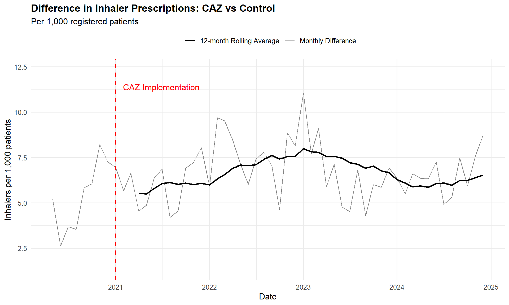

Show the code
library(tidyverse)
library(here)
library(broom)
library(sf)
library(knitr)
library(kableExtra)These are preliminary results and the analysis is still in progress.
This document implements a Difference-in-Differences (DiD) analysis to estimate the causal effect of Portsmouth’s Clean Air Zone (CAZ) implementation on total inhaler prescriptions (SABA denominator). The DiD approach compares changes in prescription rates before and after CAZ implementation in areas within 10 km of the CAZ (treatment group) relative to changes in control areas (practices in Major Towns and cities outside any CAZ excluding London).
library(tidyverse)
library(here)
library(broom)
library(sf)
library(knitr)
library(kableExtra)load(file.path(here(), "data_raw/trends_data.rda"))
CAZ_lst <- read_csv(
file.path(here(), "data_raw/CAZ_list.csv"),
show_col_types = FALSE
)# Get CAZ start date
caz_start_year <- CAZ_lst |>
filter(CAZ == params$current_caz) |>
pull(Start)
caz_start <- as.Date(paste0(caz_start_year, "-01-01"))
# Filter CAZ practices
caz_saba <- CAZ_SABA |>
left_join(
CAZ_practices |>
st_drop_geometry() |>
select(code, location_class, CAZ_name),
by = c("org_id" = "code")
) |>
filter(CAZ_name == params$current_caz)
# Aggregate CAZ data
caz_agg <- caz_saba |>
filter(str_detect(location_class, "within")) |>
summarise(
total_patients = sum(NUMBER_OF_PATIENTS, na.rm = TRUE),
total_numerator = sum(numerator, na.rm = TRUE),
total_denominator = sum(denominator, na.rm = TRUE),
.by = c(location_class, date, month, year)
) |>
filter(total_patients > 0) |>
mutate(
inhalers_per_1000 = (total_denominator / total_patients) * 1000,
treatment = 1
)
# Aggregate control data
control_agg <- noCAZ_SABA |>
summarise(
total_patients = sum(NUMBER_OF_PATIENTS, na.rm = TRUE),
total_numerator = sum(numerator, na.rm = TRUE),
total_denominator = sum(denominator, na.rm = TRUE),
.by = c(date, month, year)
) |>
filter(total_patients > 0) |>
mutate(
inhalers_per_1000 = (total_denominator / total_patients) * 1000,
treatment = 0,
location_class = "Control"
)
# Combine treatment and control
did_data <- bind_rows(
caz_agg,
control_agg
) |>
mutate(
post = as.integer(date >= caz_start),
time_to_treatment = as.numeric(difftime(date, caz_start, units = "days")) /
30.44 # Convert to months
) |>
filter(
!is.na(inhalers_per_1000),
is.finite(inhalers_per_1000)
) |>
arrange(date, treatment)did_summary <- did_data |>
group_by(treatment, post) |>
summarise(
n_obs = n(),
mean_inhalers = mean(inhalers_per_1000, na.rm = TRUE),
sd_inhalers = sd(inhalers_per_1000, na.rm = TRUE),
.groups = "drop"
) |>
mutate(
period = ifelse(post == 0, "Pre-CAZ", "Post-CAZ"),
group = ifelse(treatment == 1, params$current_caz, "Control")
)
kable(
did_summary |>
select(group, period, n_obs, mean_inhalers, sd_inhalers),
digits = 2,
col.names = c("Group", "Period", "N Obs", "Mean Inhalers/1000", "SD"),
caption = "Summary Statistics by Treatment and Period"
) |>
kable_styling(bootstrap_options = c("striped", "hover"))| Group | Period | N Obs | Mean Inhalers/1000 | SD |
|---|---|---|---|---|
| Control | Pre-CAZ | 8 | 76.53 | 3.81 |
| Control | Post-CAZ | 48 | 74.94 | 3.38 |
| Portsmouth | Pre-CAZ | 24 | 81.83 | 5.35 |
| Portsmouth | Post-CAZ | 144 | 81.65 | 7.28 |
plot_data <- did_data |>
group_by(date, treatment) |>
summarise(
mean_inhalers = mean(inhalers_per_1000, na.rm = TRUE),
.groups = "drop"
) |>
mutate(
group = ifelse(treatment == 1, "CAZ", "Control")
)
ggplot(
plot_data,
aes(x = date, y = mean_inhalers, color = group, linetype = group)
) +
geom_line(linewidth = 1) +
geom_vline(
xintercept = caz_start,
linetype = "dashed",
color = "red",
linewidth = 0.8
) +
annotate(
"text",
x = caz_start,
y = max(plot_data$mean_inhalers, na.rm = TRUE),
label = "CAZ Implementation",
vjust = -0.5,
color = "red"
) +
theme_minimal(base_size = 12) +
theme(
legend.position = "bottom",
plot.title = element_text(face = "bold")
) +
labs(
title = paste(
"Total Inhaler Prescriptions:",
"CAZ",
"vs Control"
),
subtitle = "Per 1,000 registered patients",
x = "Date",
y = "Inhalers per 1,000 patients",
color = "Group",
linetype = "Group"
) +
scale_color_manual(
values = c("CAZ" = "#E69F00", "Control" = "#0072B2")
)
Difference plot with 12-month rolling average to smooth out short-term fluctuations and highlight overall trends.
diff_plot_data <- did_data |>
group_by(date, treatment) |>
summarise(
mean_inhalers = mean(inhalers_per_1000, na.rm = TRUE),
.groups = "drop"
) |>
mutate(
group = ifelse(treatment == 1, "CAZ", "Control")
) |>
select(-treatment) |>
pivot_wider(names_from = group, values_from = mean_inhalers) |>
mutate(
caz_rm = zoo::rollmean(
get("CAZ"),
k = 12,
fill = NA,
align = "right"
),
control_rm = zoo::rollmean(Control, k = 12, fill = NA, align = "right")
) |>
mutate(
difference_rm = caz_rm - control_rm,
difference = get("CAZ") - Control
)
ggplot(diff_plot_data, aes(x = date)) +
geom_line(
aes(y = difference, color = "Monthly Difference"),
linewidth = 0.5
) +
geom_line(
aes(y = difference_rm, color = "12-month Rolling Average"),
linewidth = 1
) +
geom_vline(
xintercept = caz_start,
linetype = "dashed",
color = "red",
linewidth = 0.8
) +
annotate(
"text",
x = caz_start,
y = max(diff_plot_data$difference, na.rm = TRUE),
label = "CAZ Implementation",
vjust = -0.5,
hjust = -0.1,
color = "red"
) +
labs(
title = paste(
"Difference in Inhaler Prescriptions:",
"CAZ",
"vs Control"
),
subtitle = "Per 1,000 registered patients",
x = "Date",
y = "Inhalers per 1,000 patients"
) +
theme_minimal(base_size = 12) +
scale_y_continuous(expand = 0.2) +
theme(
legend.position = "top",
plot.title = element_text(face = "bold")
) +
scale_color_manual(
values = c(
"Monthly Difference" = "#888888",
"12-month Rolling Average" = "black"
),
name = ""
)
did_model_basic <- lm(
inhalers_per_1000 ~ treatment * post,
data = did_data
)
summary(did_model_basic)
Call:
lm(formula = inhalers_per_1000 ~ treatment * post, data = did_data)
Residuals:
Min 1Q Median 3Q Max
-23.4919 -4.3931 -0.4639 3.7825 16.0491
Coefficients:
Estimate Std. Error t value Pr(>|t|)
(Intercept) 76.528 2.245 34.085 <2e-16 ***
treatment 5.298 2.593 2.044 0.0422 *
post -1.588 2.425 -0.655 0.5133
treatment:post 1.408 2.800 0.503 0.6156
---
Signif. codes: 0 '***' 0.001 '**' 0.01 '*' 0.05 '.' 0.1 ' ' 1
Residual standard error: 6.35 on 220 degrees of freedom
Multiple R-squared: 0.1683, Adjusted R-squared: 0.157
F-statistic: 14.84 on 3 and 220 DF, p-value: 7.83e-09did_coef_basic <- tidy(did_model_basic, conf.int = TRUE) |>
filter(term == "treatment:post")
kable(
did_coef_basic,
digits = 3,
caption = "DiD Estimate (Treatment × Post interaction)"
) |>
kable_styling(bootstrap_options = c("striped", "hover"))| term | estimate | std.error | statistic | p.value | conf.low | conf.high |
|---|---|---|---|---|---|---|
| treatment:post | 1.408 | 2.8 | 0.503 | 0.616 | -4.111 | 6.927 |
did_model_trends <- lm(
inhalers_per_1000 ~ treatment * post + time_to_treatment,
data = did_data
)
summary(did_model_trends)
Call:
lm(formula = inhalers_per_1000 ~ treatment * post + time_to_treatment,
data = did_data)
Residuals:
Min 1Q Median 3Q Max
-23.6335 -4.0187 -0.3258 3.6925 16.0208
Coefficients:
Estimate Std. Error t value Pr(>|t|)
(Intercept) 76.272024 2.240176 34.047 <2e-16 ***
treatment 5.298297 2.581027 2.053 0.0413 *
post -0.004555 2.583590 -0.002 0.9986
time_to_treatment -0.056571 0.032862 -1.721 0.0866 .
treatment:post 1.407865 2.787827 0.505 0.6141
---
Signif. codes: 0 '***' 0.001 '**' 0.01 '*' 0.05 '.' 0.1 ' ' 1
Residual standard error: 6.322 on 219 degrees of freedom
Multiple R-squared: 0.1794, Adjusted R-squared: 0.1644
F-statistic: 11.97 on 4 and 219 DF, p-value: 8.172e-09did_coef_trends <- tidy(did_model_trends, conf.int = TRUE) |>
filter(term == "treatment:post")
kable(
did_coef_trends,
digits = 3,
caption = "DiD Estimate with Time Trends (Treatment × Post interaction)"
) |>
kable_styling(bootstrap_options = c("striped", "hover"))| term | estimate | std.error | statistic | p.value | conf.low | conf.high |
|---|---|---|---|---|---|---|
| treatment:post | 1.408 | 2.788 | 0.505 | 0.614 | -4.087 | 6.902 |
did_model_month <- lm(
inhalers_per_1000 ~ treatment * post + factor(month),
data = did_data
)
summary(did_model_month)
Call:
lm(formula = inhalers_per_1000 ~ treatment * post + factor(month),
data = did_data)
Residuals:
Min 1Q Median 3Q Max
-24.7122 -3.5391 0.1497 3.3533 14.2380
Coefficients:
Estimate Std. Error t value Pr(>|t|)
(Intercept) 79.2739 2.5567 31.006 < 2e-16 ***
treatment 5.2983 2.3618 2.243 0.025924 *
post -1.4061 2.2289 -0.631 0.528814
factor(month)2 -7.3980 2.0454 -3.617 0.000374 ***
factor(month)3 -0.1139 2.0454 -0.056 0.955629
factor(month)4 -5.6523 2.0454 -2.763 0.006230 **
factor(month)5 -4.1241 1.9538 -2.111 0.035979 *
factor(month)6 -4.0428 1.9538 -2.069 0.039761 *
factor(month)7 -3.5365 1.9538 -1.810 0.071727 .
factor(month)8 -7.2633 1.9538 -3.717 0.000258 ***
factor(month)9 -3.1001 1.9538 -1.587 0.114095
factor(month)10 -1.7073 1.9538 -0.874 0.383231
factor(month)11 -0.8388 1.9538 -0.429 0.668157
factor(month)12 2.6458 1.9538 1.354 0.177143
treatment:post 1.4079 2.5510 0.552 0.581618
---
Signif. codes: 0 '***' 0.001 '**' 0.01 '*' 0.05 '.' 0.1 ' ' 1
Residual standard error: 5.785 on 209 degrees of freedom
Multiple R-squared: 0.3443, Adjusted R-squared: 0.3003
F-statistic: 7.837 on 14 and 209 DF, p-value: 2.893e-13did_coef_month <- tidy(did_model_month, conf.int = TRUE) |>
filter(term == "treatment:post")
kable(
did_coef_month,
digits = 3,
caption = "DiD Estimate with Month Fixed Effects (Treatment × Post interaction)"
) |>
kable_styling(bootstrap_options = c("striped", "hover"))| term | estimate | std.error | statistic | p.value | conf.low | conf.high |
|---|---|---|---|---|---|---|
| treatment:post | 1.408 | 2.551 | 0.552 | 0.582 | -3.621 | 6.437 |
comparison <- bind_rows(
did_coef_basic |> mutate(model = "Basic DiD"),
did_coef_trends |> mutate(model = "With Time Trend"),
did_coef_month |> mutate(model = "With Month FE")
) |>
select(model, estimate, std.error, statistic, p.value, conf.low, conf.high)
kable(
comparison,
digits = 3,
caption = "Comparison of DiD Estimates Across Specifications"
) |>
kable_styling(bootstrap_options = c("striped", "hover"))| model | estimate | std.error | statistic | p.value | conf.low | conf.high |
|---|---|---|---|---|---|---|
| Basic DiD | 1.408 | 2.800 | 0.503 | 0.616 | -4.111 | 6.927 |
| With Time Trend | 1.408 | 2.788 | 0.505 | 0.614 | -4.087 | 6.902 |
| With Month FE | 1.408 | 2.551 | 0.552 | 0.582 | -3.621 | 6.437 |
DiD Estimate: 1.408 inhalers per 1,000 patients (95% CI: [-4.111, 6.927])
P-value: 0.616
Statistical Significance: Not statistically significant at 5% level
Direction: The estimate indicates a positive effect on inhaler prescriptions
Magnitude: The CAZ is associated with a change of approximately 1.41 inhalers per 1,000 patients
Robustness: The estimate is stable across different model specifications
Results produced on: 2026-02-05